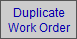
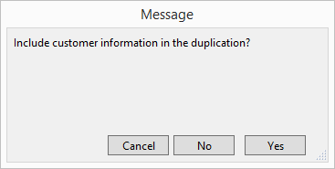
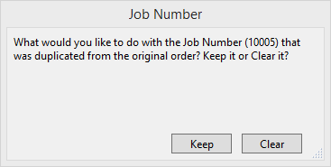
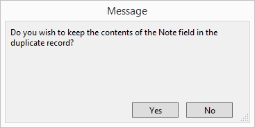

Working with Large Orders
This is an overview of entering multiple Work Orders for large volume orders.
Entering Large Volume Orders in FrameReady
-
Create the first Work Order as usual.
-
In the Order tab, the Job # field and the Qty button should be blank.
-
Click the Job # button to view existing job numbers; do not use an existing Job Number for new jobs/projects.
-
In the Job Number field (below the Job # button), enter a unique Job Number.
-
Finish entering your data into the Work Order.
-
If you need to track Sidemark, Plan, and Room, then open the Notes tab.
-
On the left-hand sidebar, click the Duplicate Work Order button.

-
A dialog box appears.

-
Click Yes to include customer information in the duplicate Work Order.
-
Another dialog box appears.

-
Click Keep so that the duplicated Work Order continues to use the Job Number you assigned (in Step 4 above).
-
If a Note was added, then you are asked if you wish to also duplicate the note.

-
The duplicated Work Order appears. The Qty button (in the Order tab) now reads "2".
-
Adjust this new Work Order as necessary.
When you are ready to create another Work Order for this job, click the Duplicate Work Order button and repeat Steps 7 - 10.
Printing Work Orders for Large Volume Orders
-
From a Work Order belonging to the job, click the Print Documents button.
-
In the Print For Shop section, click the All [Customer name]'s Orders button.
-
To quickly view a list of all Work Orders in the job, click the Qty button in the Order tab.
© 2023 Adatasol, Inc.